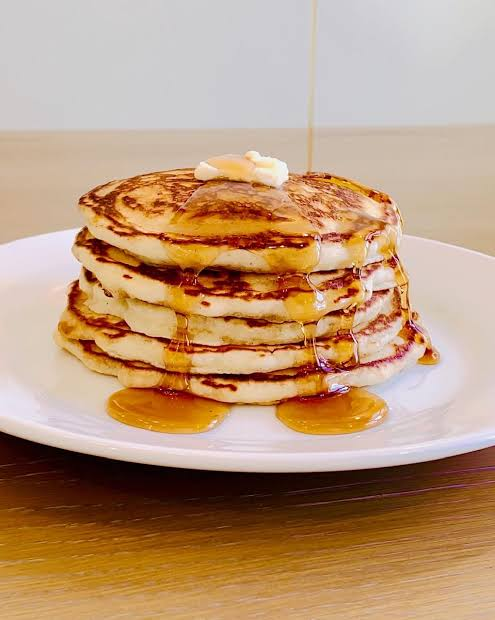

Pancake

Description
Pancakes are soft, fluffy cakes made from a mixture of flour, milk, eggs and sugar. They are usually served with strup, fruit or butter.
Ingredients
- 1 cup all-purpose flour
- 1 tablespoon sugar
- 1 teaspoon baking powder
- 1 egg
- 3/4 cup milk
- 2 tablespoons melted butter
- A pinch of salt
Steps
- Mix the flour, sugar, baking powder and salt
- In another bowl, whisk the egg, milk and melted butter
- Combine the wet and dry ingredients
- Heat a lightly greased frying pan
- Pour some butter into the pan
- Cook until bubbles form, then flip the pancake
- Cook the other side until golden brown
- Serve with your favorite toppings
Back to Home